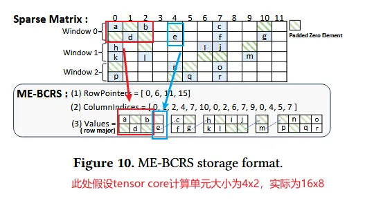
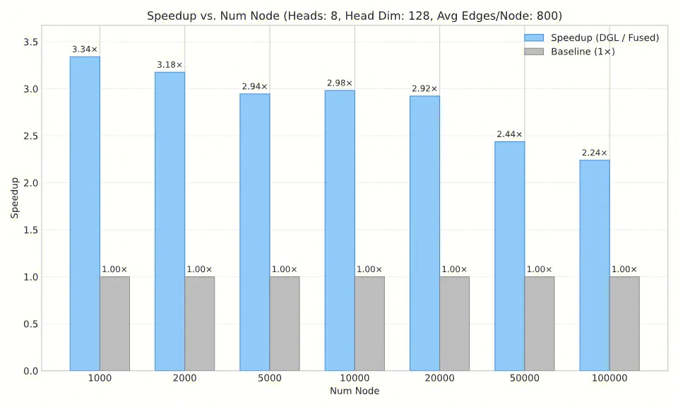
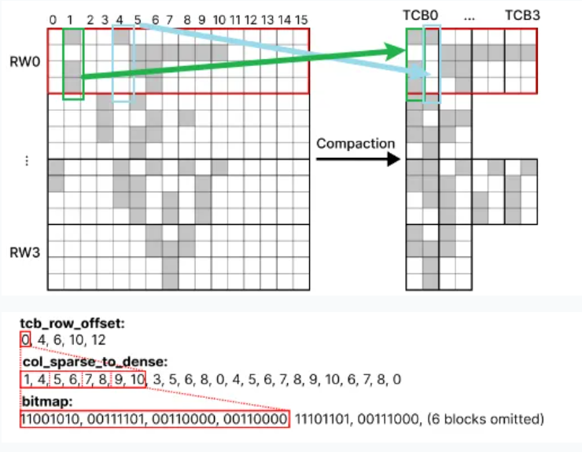

近期GNN Attention算子优化工作速览
注：本文用LLM辅助写作的地方主要在：我认为LLM比我理解的更好的地方，会用LLM的表述代替。
问题设定
需要计算Graph Transformer中的Attention。在此我们忽略multihead-attention，考虑基本的single-head attention.
此外，我们的attention mask(邻接矩阵A)是非结构化稀疏的。如果你的attention mask是结构化稀疏的，比如blockwise等可以被代码表示的稀疏pattern，你应该使用flash attention的varlen变体, 或者flex attention等attention编译器。
Notation
n: 图节点数，规模为 1k~1M
nnz: 图边数（稀疏矩阵非零元素数，Num NonZero）
规模为10n~1000n
q, k, v: (n, d)
A: (n, n), binary, 高度稀疏
计算公式
softmax((q @ k.transpose()) * A) @ V
其中，@ 表示矩阵乘法，*表示element-wise乘法。
实现：naive version
- 最简单的就是把A给materialize出来，然后用作attention_mask。问题是A是n^2的，显存不够用。
- A用COO方式存储，大小(2,nnz)，然后先把每条边的qk-pair算出来(nnz,d)，然后再做reduce和scatter和V相乘。
Reformulate
我们引入三个算子:
- SDDMM (Sampled Dense-Dense MatMul)
- A (m, k), B (k, n), 稠密
- M (n, n)， 稀疏 SDDMM(A, B, M) 定义为：
for i, j in product(range(n), range(n)):
if M[i, j] != 0:
out[i, j] = dot(A[i,:], B[:,j])
else:
out[i, j] = 0
- Sparse Softmax: 在稀疏矩阵上按行softmax
- SpMM：sparse A @ dense B
此时我们的计算公式就可以重新写成:
out = SpMM(Softmax(SDDMM(Q, K_T, A)), V)
以此我们引出下面的实现
实现：DGL
Graph Transformer in a Nutshell — DGL 2.2.1 documentation
对于稠密的q,k,v和CSR存储的A，通过如下代码计算attention：
attn = dglsp.bsddmm(A, q, k.transpose(1, 0)) # (sparse) [N, N, nh]
# Sparse softmax by default applies on the last sparse dimension.
attn = attn.softmax() # (sparse) [N, N, nh]
out = dglsp.bspmm(attn, v) # [N, dh, nh]
算子在DGL库内部由CUDA实现。看DGL的代码可以发现，其实现利用了稀疏性，但是存在以下优化点
- 进行的是最直观的并行，没有进行充分的优化
- 各个kernel分开执行，没有融合
- 没有利用tensor core
实现：FlashSparse
https://github.com/ParCIS/FlashSparse/tree/main/eva
主题：对SDDMM,SpMM进行优化；尝试在稀疏输入中以最小粒度利用tensor core
基于一个基本观察：A × B = C ⟹ (Bᵀ × Aᵀ)ᵀ = C，发明了交换与转置MMA计算策略：目标是将稀疏矩阵划分所依赖的MMA指令维度，从较大的m维（值为16）切换到较小的n维（值为8）。标准张量核心MMA指令的形状为m16n8k8（FP16精度下，m=16, n=8, k=8）。这使得稀疏矩阵 A 可被划分为8×1的向量，相比之前工作中使用的16×1向量，计算冗余减少了约50%。
- 矩阵格式：本算法发明了ME-BCRS格式，基本想法是在一个8x1的block中，如果有一个元素是非零的，那么就把这整个block都当成非零的存下来。
- 空间开销维持在O(n+nnz)，常数比较小，远没有达到head_dim的量级。
- 矩阵格式转换时间开销 (CSR -> ME-BCRS)：由于是一次性开销，相对整个模型推理时间几乎可以忽略。

FlashSparse的SpMM算法（C = A × B）
阶段1：转置访问与加载
- 块形状：算法将 A 划分为8×8的稀疏TC块（FP16精度下），将 B 划分为8×16的稠密TC块。
- 稀疏块 A 加载：线程从全局内存（以行优先的ME-BCRS格式存储）加载8×8稀疏TC块 A，并在寄存器中将其转置为 Aᵀ，作为右操作数。
- 稠密块 B 加载：线程从全局内存（行优先）加载8×16稠密TC块 B，并在寄存器中将其转置为 Bᵀ，作为左操作数。
- 合并访问：通过重新排列线程访问的列，确保所需数据对齐形成2×2的FP16元素块，从而使内存事务匹配GPU最小32字节的事务粒度，实现合并访问，减少50%的访存开销。
阶段2：交换与转置计算
在张量核心上执行MMA指令：Bᵀ × Aᵀ。
- Bᵀ 作为左操作数（m=16, k=8）。
- Aᵀ 作为右操作数（k=8, n=8）。
- 结果为转置后的输出块 Cᵀ（尺寸为16×8），存储在寄存器中。
阶段3：转置输出
寄存器中的 Cᵀ 必须在写回全局内存前转置回 C。由于寄存器中 Cᵀ 的数据布局与加载 B 时所需的 Bᵀ 布局完全相同，因此可复用为加载 B 设计的高效合并写回策略，将结果写入全局内存。
FlashSparse的SDDMM算法（C = M ⊙ (AB)）
- 块形状：FlashSparse将稀疏输出矩阵 C 划分为8×16的稀疏TC块。两个稠密输入矩阵（按论文图8中的记号，记为 A_dense 和 B_dense，满足 C_sparse = A_dense × B_dense）分别以稠密TC块形式加载：A_dense 为8×8（行优先），B_dense 为8×16（列优先）。
- 转置计算的数据对齐：SDDMM中稠密输入矩阵 A（行优先）和 B（列优先）的数据布局，恰好满足“交换与转置MMA计算”（Bᵀ × Aᵀ）的要求。
转置计算：
- 稠密输入 B 被转置为 Bᵀ（尺寸16×8），作为左操作数。
- 稠密输入 A 被转置为 Aᵀ（尺寸8×8），作为右操作数。
- 计算 Bᵀ × Aᵀ 得到稠密结果 C_denseᵀ。
- 用M矩阵进行element-wise product，从C_dense 得到C_sparse
实测:
未测试
实现：DF-GNN
https://github.com/paoxiaode/DF-GNN
主题：block/warp调度和算子融合
由于我主要看了tiling部分的算法（适用于大图和邻居数不确定的图，仅forward），所以主要介绍这部分。
使用的矩阵格式是CSR，不需要做额外的格式转换
算法流程
Launch Kernel on Grid: (n × h)
↓
Each Block → (rid, hid): one node, one head
↓
Load Q[rid, hid, :] → s_Q[f] (shm)
↓
For each tile of neighbors (size ≤ 32):
- Load neighbor IDs from indices[]
- Compute Q · K^T (dot product using s_Q and K[dst])
- Reduce in warp → store in neigh_nodes_weight[eid]
- Find max(weight) in current tile → weightMax
- Adjust partial_sum and acc with exp(old_max - new_max)
- Compute exp(weight - weightMax) and accumulate acc += exp_w * V[]
- Accumulate partial_sum += exp_w
- Update weightMax_old
↓
Final normalization: out_feat = acc / partial_sum
↓
Write back to global memory
主要就是通过合理安排GPU资源（threadblock, thread）和计算任务的mapping，实现在一个kernel 内负载相对均衡的完成任务。
实测:
代码方面：开源的代码有比较多的bug，包括了data race, 指针运算错误等等
修复后：
在常用工作范围内，forward速度达到DGL实现的2.5x ~ 3x

精度：和DGL实现对比，MAE在1e-8 ~ 1e-9量级，差距可以忽略不计
F3S
https://github.com/HPCForge/Fused3S/tree/main/scripts 主题：算子融合+混合精度+利用tensor core
其主要思路还是类似FlashSparse，但是通过算子融合达到了更高的效率（访存开销，kernel launch开销更小）。混合精度算是一种tradeoff。
- 仅有forward的实现
- F3S也使用了自定义的矩阵格式BSB，基本想法是在一个16x1的block中，如果有一个元素是非零的，那么就把这整个block都当成非零的存下来。
- 优化的一点在于，block内是否为0被压缩到一个bit中，每个16x8block以uint128保存，充分利用了attention中adj只能为0/1的特点
- 和flashsparse相比不足的一点在16x1粒度更大，多余计算更多，也是本工作没考虑到的一点
- 空间开销：O(n+nnz)，但是常数会更大一些
- 矩阵格式转换时间开销 (CSR -> BSB)：一次性开销，暂时忽略。

算法流程：
-
划分行块：
- 将 Q 按行划分为 $T_r = \lceil N / r \rceil$ 个块 $\{Q_1, ..., Q_{T_r}\}$，每个大小为 $r \times d$。
- 将输出 O 同样划分为 $T_r$ 个块 $\{O_1, ..., O_{T_r}\}$，每个大小为 $r \times d$。
-
对每个行块索引 $i = 1$ 到 $T_r$（并行处理）：
-
初始化
- $m_o \leftarrow -\infty \in \mathbb{R}^r$（行最大值）
- $l_o \leftarrow 0 \in \mathbb{R}^r$（行 softmax 累加和）
- $O_i \leftarrow 0 \in \mathbb{R}^{r \times d}$（输出块，fp32）
-
加载数据：
- 将 $Q_i$ 从全局内存（HBM）加载到共享内存（SMEM）。
- 计算当前行窗口（RW）包含的 TCB 数量：$t = \text{tro}[i+1] - \text{tro}[i]$。
- 通过
sptd获取当前 RW 对应的原始列索引向量 $c$。 - 从 $K$ 和 $V$ 中按索引 $c$ gather 出对应的行，得到 $\hat{K}, \hat{V} \in \mathbb{R}^{t \cdot c \times d}$。
-
划分 warp 块：
- 将 $\hat{K}$ 划分为 $T_c = \lceil t / W \rceil$ 个块 $\{\hat{K}_1, ..., \hat{K}_{T_c}\}$，每个大小为 $Wc \times d$。
- 将 $\hat{V}$ 同样划分为 $T_c$ 个块 $\{\hat{V}_1, ..., \hat{V}_{T_c}\}$，每个大小为 $Wc \times d$。
-
对每个 warp 块索引 $j = 1$ 到 $T_c$：
-
SDDMM：
- 调用 $\text{TBGemm}(Q_i, \hat{K}_j^T, 0)$，计算中间得分块 $S_i \in \mathbb{R}^{r \times c}$（fp32）。
- 用 BSB 中对应 TCB 的 bitmap 对 $S_i$ 进行掩码（非零位置保留，其余置 0）。
-
Online Softmax：
- 计算当前块行最大值：$m_i = \max(m_o, \text{rowmax}(S_i))$。
- 计算指数：$E_i = \exp(S_i - m_i)$。
- 更新累加和：$l_o = \text{diag}(\exp(m_o - m_i)) \cdot l_o + \text{rowsum}(E_i)$。
- 将 $E_i$ 转为 fp16，存入 SMEM。
-
SpMM：
- 对已有输出缩放：$O_i = \text{diag}(\exp(m_o - m_i)) \cdot O_i$。
- 调用 $\text{TBGemm}(E_i, \hat{V}_j, O_i)$，将结果累加回 $O_i$。
- 更新行最大值：$m_o = m_i$。
-
-
最终归一化并写回：
- 对输出块归一化：$O_i = \text{diag}(l_o)^{-1} \cdot O_i$。
- 将 $O_i$ 写回全局内存（HBM）。
-
Subroutine: TBGemm
输入:
- 矩阵块 $A \in \mathbb{R}^{m \times K}$ (位于 SMEM，共享内存)
- 矩阵块 $B \in \mathbb{R}^{K \times P}$ (位于 HBM，全局内存)
- 累加项 $D \in \mathbb{R}^{m \times P}$ (位于 SMEM，共享内存)
输出:
- 结果矩阵 $C = A B + D \in \mathbb{R}^{m \times P}$
流程:
-
切分块 (Tiling): 将输入矩阵 $A$, $B$, $D$ 按照 Tensor Core 的硬件 Tile 尺寸（例如 $16 \times 8 \times 16$）切分为对应的子块。
-
并行迭代 (Output Tiles): 对结果矩阵 $C$ 的每个输出 Tile (通常由一个 Warp 或一个 Thread Block 计算):
- 加载累加项 D: 从 SMEM 中加载 $D$ 对应的子块到线程的寄存器中，作为初始累加值 $C$.
-
内积迭代 (K-Tiles): 对 $K$ 维度的每个 $k$-tile 进行迭代累加:
- 加载 A: 从 SMEM 中加载矩阵 $A$ 对应的 $A_{\text{tile}}$ 子块。
- 加载 B: 从 HBM 中直接加载矩阵 $B$ 对应的 $B_{\text{tile}}$ 子块。
- 执行 MMA 指令: 调用硬件支持的 PTX
mma指令（Matrix Multiply-Accumulate），执行计算并累加： $$C \leftarrow A_{\text{tile}} \cdot B_{\text{tile}} + C$$
-
返回: 最终得到结果 $C$。
实测:
代码方面：在矩阵格式转换部分有bug，已联系作者修复；开源代码没有multihead，需要自己实现。
速度达到DGL实现的3x(相对稀疏) 到5x (相对稠密）
限制：n % 16 == 0，因为需要分割成8x16的block
精度：和DGL实现对比，MAE在3e-5~1e-4 量级，很可能需要通过对模型进行end2end测试来确定是否适合使用。